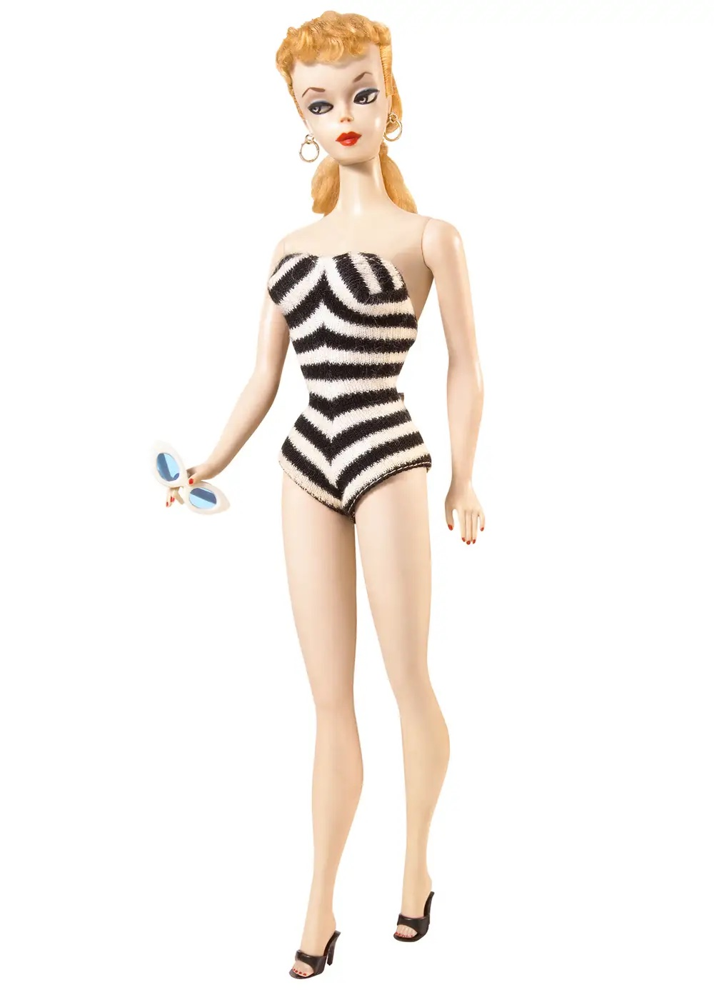
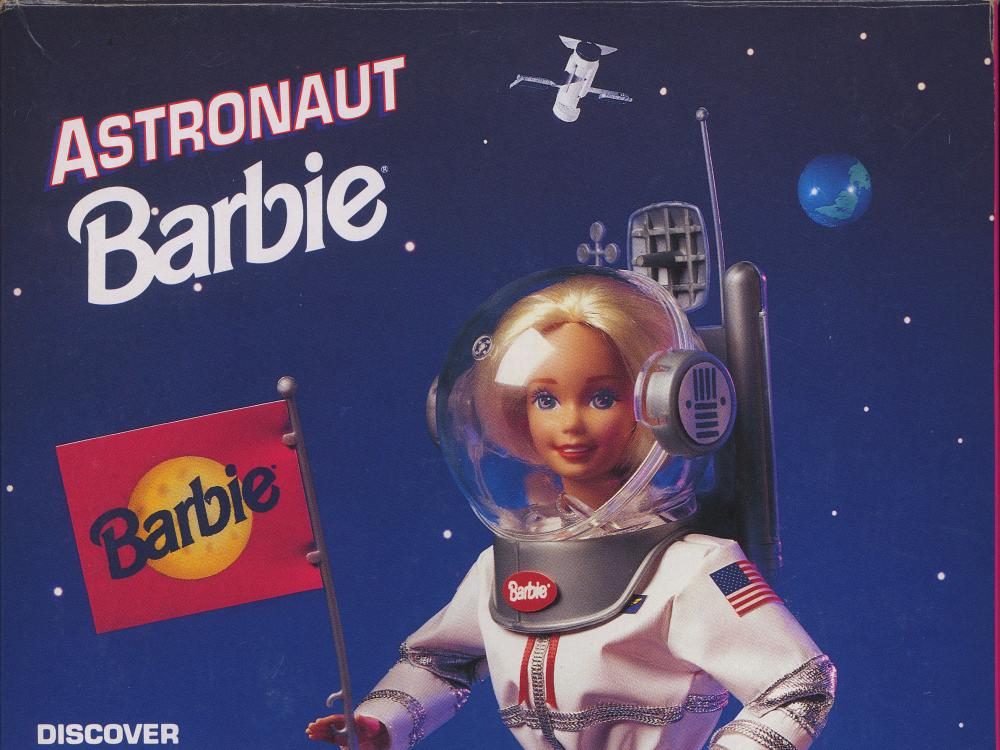
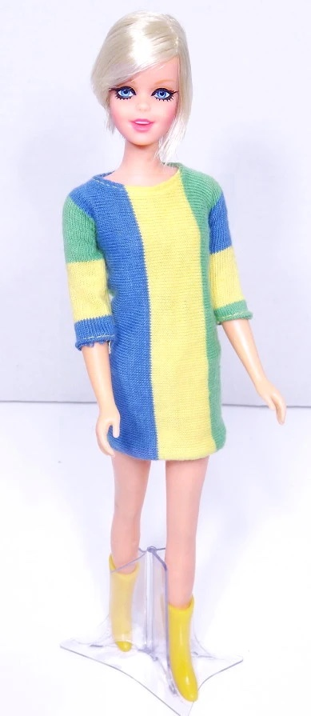
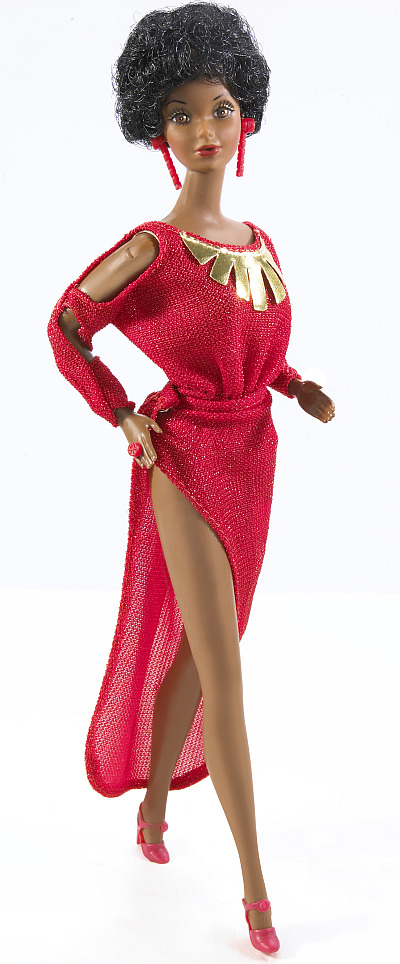
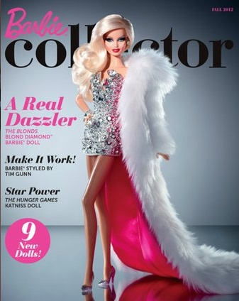
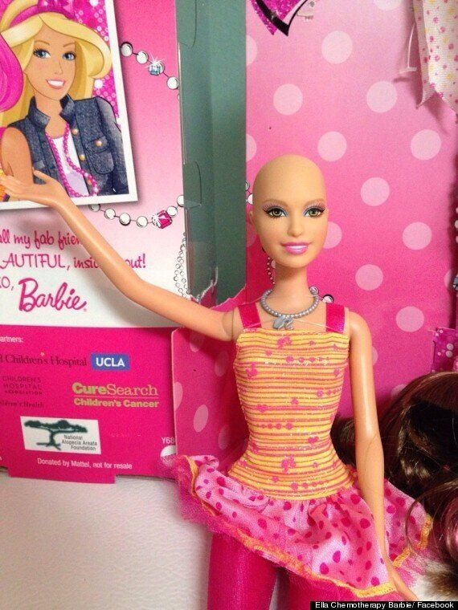

1950s: Barbie was inspired by Marilyn Monroe and Elizabeth Taylor
Ruth Handler co-founded Mattel with her husband and named the first Barbie Barbara Millicent Roberts, which she named after her daughter Barbara Handler. Handler released the first Barbie on March 9th, 1959 at the American Toy Fair in New York at $3.00 a piece, worth today $25,000.
1960s: Barbie Grew to be a Career Woman a Decade After Mattel Released Her
Barbie has pursued over 250 careers such as computer engineering, medicine, and space exploration as she went to the moon in 1965, four years before Neil Armstrong landed on the moon.
1960s: Super Model Twiggy Barbie is Made
The era of creating Barbies to resembles celebrities began in 1967, and later Cher, Audrey Hepburn, Diana Ross, and JK Rowling would join the mix.
1980s: Mattel Releases the First Offical African Latina American Barbie
The real first African American doll was Christie, Barbie's friend, in 1968; however, this Barbie was the first official release. Afterward, the first of more than 40 races internationally met stores worldwide in 1980.
2012: The Drag Queen is Here
Fashion designers Phillipe and David Blond created the Blonds Blond Diamond Barbie priced at $125 during Christmas time in 2012.
2012 & 2014: Chemo Barbie Ella is Here
To help young girls with pediatric cancer, Mattel released a doll named Ella, Barbie's friend who has a bald head. Originally, the company distributed the doll to hospitals alone, but a cancer patient's mother petitioned for Mattel to produce more and was successful in 2014.
2016: Diversity with the Barbie Fashionistas
![To the far left, there is a girl with skin of dark chocolate and dark curly hair in a yellow and pink summer dress. Next to her, there is a fair-skinned girl with long blue hair in a pink half-sleeved shirt with a corset on top, black with black and white stripes for the center, and a black mini skirt. The girl in the middle has a pink checkered shirt, fair skin, long silky black hair, a yellow flowery necklace, and a long white pencil skirt. Next to her is a girl with chesnut brown skin, curly brown hair, and a halter neck dress with black for the top and red for the bottom. The girl second to the far right has curly red hair, brown eyes, fair skin, a dress with a blue, pink, and white plaid pattern for the top and a blue skirt for the bottom. The girl to the far right has long blonde hair, blue eyes, fair skin, a denim tank top, and a yellow skirt with a pink belt.](assets/diverse.jpg)
For many years, critics argued that Barbie was not representative of modern women. As a result, Mattel released the Barbie Fashionistas in 2016 in four body types, seven skin tones, twenty-two eye colors, and twenty-four hairstyles.
2018 & 2019: Honoring Historic Icons in History & Representing All Body Types
![To the left is Amelia Earhart, middle Frida Kahlo, and right Katherine Johnson. Amelia Earhart has a short brown pixie bob wearing a brown leather jacket with a white scarf and googles around her neck. She is holding her brown helmet in her right arm and is wearing khaki colored pants. Frida Kahlo has a black-haired bun with golden glasses a dress with a black top with red flowers and green stems, a blue bottom fanned out skirt, and a red shawl overtop. Katherine Johnson has a thick black pixie bob with black glasses and a light pink dress with a white tie and her ID badge around her neck.](assets/all.jpg)
To honor influential women, Mattel released the "Inspiring Women Collection" in 2018 to depict (from left to right) the pilot Amelia Earhart, painter Frida Kalho, and space scientist, physicist, and mathematician Katherine Johnson. Johnson provided the calculations for Alan Shepard's first flight into space, John Glenn's orbit around the earth, and the trajectory for Apollo 11's landing. She also recived the Presidential Medal of Freedom in 2015 from Barack Obama. Later in 2019, Mattel released a Barbie with a smaller bust, waist, and more defined arms to add on to the collection of Barbie's wide array of body shapes.
Credit to History.com